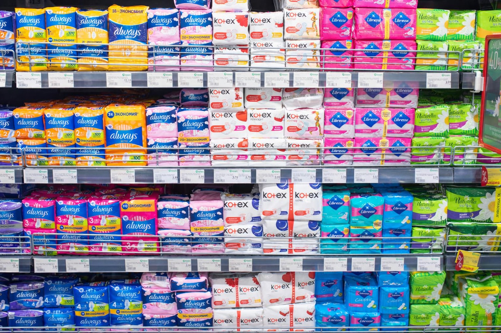
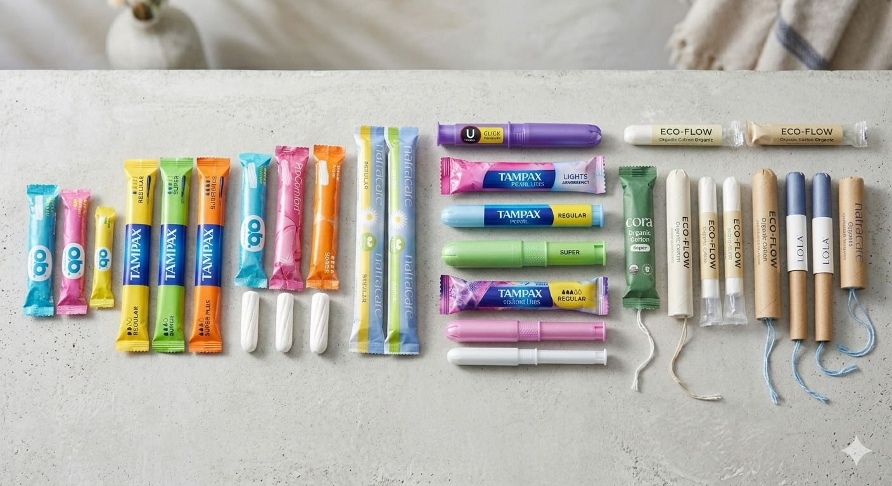
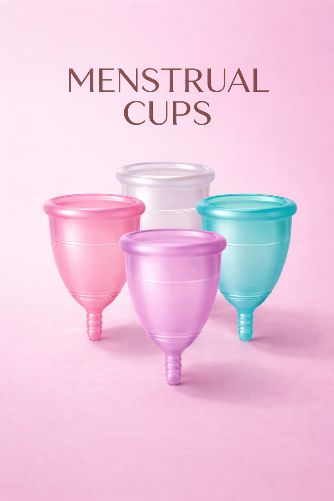

Menstrual Cycle Guide
Understanding Menstruation Cycle
A menstrual cycle is a monthly process in a female body, the normal, monthly shedding of the uterine lining (endometrium) in females, resulting in bleeding from the uterus that passes through the vagina, it usually lasts for 3 to 7 days.
Types of Menstrual products
Sanitary Pads
Sanitary pads are absorbent products designed to keep a women clean during their periods. They are made of soft material that prevents leakage and keep the vagina comfortable.
They come in different sizes to suit light, medium and heavy flow days and some have fold over tabs to hold them in place.

How to use sanitary pads
Unwrap the pad from the packaging.
Remove the protective strip from the pad and stick it to your underwear.
Change the pad regularly, usually for 4 to 5 hours to stay clean and prevent odor and infection.
Advantages of sanitary pad
No risk of Toxic Shock Syndrome when used properly.
Reusable Cloth Pads
Reusable cloth pads are menstrual products made from soft, absorbent fabric than can be washed and reused. They are eco-friendly alternative to disposable sanitary pads and are designed to collect menstrual blood while keeping you comfortable.
They are available in various sizes and thickness for light, medium and heavy flow and many have wings that help them stay attached to your underwear.

Place the pad on your underwear the absorbent side facing up and the fold over tabs wrapped around the underwear to secure it.
Change the pad every 4-6 hours.
After using rinse, the pad in the cold water to rinse off the blood they wash it with mild soap or detergent.
Dry the pad completely in sunlight or a well-ventilated area.
Advantage of Reusable Cloth pads
Doesn’t have chemical or fragrances.
Tampons
Tampons are small, soft, absorbent products made from cotton, rayon, or a blend, designed to absorb menstrual blood.
They come in light, medium, and heavy absorbencies and may have applicators or be applicator free.
Tampons are discreet, portable, and safe when used correctly.

How to use Tampons
Unwrap the tampon and, if it has an applicator, hold it correctly.
Insert the tampon according to the instructions on the package. (If it’s applicator-free, use your fingers to place it).
Check that it feels comfortable, you shouldn’t feel it once it’s in place.
Leave it in for 4 to 8 hours maximum. Never leave a tampon for longer than 8 hours.
Remove the tampon by gently pulling the string straight down.
Advantages of using tampons
Small and not visible under clothing.
Easy to carry anywhere.
Does not feel bulky so daily activities are easier.
Menstrual cups
Menstrual cup is small, soft cup inserted into to collect menstrual blood.
It is reusable, lasts for several years, and is good for the menstrual blood.
It can be worn for several hours, then removed, emptied, rinsed, and reinserted.
Gentle on the body and provide long-lasting protection.

Advantages of Menstrual Cups
Fold the cup by pressing the side of the cup together and then fold.
Insert the cup into the vagina letting it open fully to form a seal.
You can wear it for up to 8 to 12 hours depending on flow.
Menstrual care is important for maintaining health and comfort. Using the right menstrual products and practicing good hygiene helps prevent infections and discomfort. It is alsoimportant to understand your body and seek help if something unusual happens. Overall, proper menstrual care supports confidence, comfort and well-being.